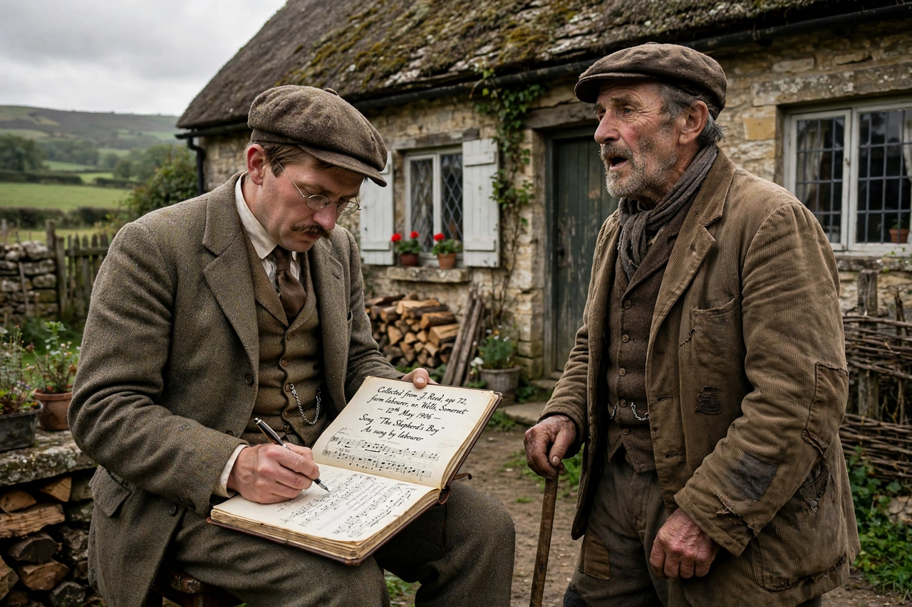

| Cecil Sharp | |
| Born | 22 November 1859, Clapham, London, England |
|---|---|
| Died | 23 June 1924 (aged 64), Hampstead, London, England |
| Occupation | Folk song and dance collector, music teacher |
| Known for | Collecting English and Appalachian folk songs; founding the English Folk Dance Society |

Cecil James Sharp (22 November 1859 – 23 June 1924) was an English collector of folk songs and folk dances and a major figure in the first English folk revival. Over his career he noted down more than 4,000 songs in England and North America, founding the English Folk Dance Society in 1911.
Sharp was educated at Uppingham School and Clare College, Cambridge. He spent most of the 1880s in Australia, working as a law clerk and organist in Adelaide, before returning to England to teach music. His interest in folk song was ignited in 1903, when he heard the gardener John England sing "The Seeds of Love" in Hambridge, Somerset, and notated the tune.
Working first in Somerset with the Rev. Charles Marson, Sharp collected thousands of songs from rural singers, often elderly labourers, preserving melodies and texts that were disappearing as oral culture declined. Between 1916 and 1918 he made three expeditions to the Appalachian Mountains of the United States with his assistant Maud Karpeles, collecting some 1,600 versions of songs — many of them old English and Scottish ballads, including many from Child's canon, that had survived there in oral tradition. The results were published posthumously as English Folk Songs from the Southern Appalachians (1932).
Sharp also revived English folk dance, collecting Morris dances and sword dances and publishing notations that made possible the modern Morris revival.
Cecil Sharp House in Camden, London, headquarters of the English Folk Dance and Song Society, is named after him. His collections underpin the work of later collectors and revival singers, though modern scholars have criticised his tendency to bowdlerise lyrics and his romantic nationalist framing of "authentic" folk culture.